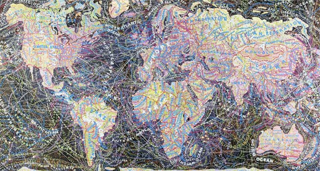
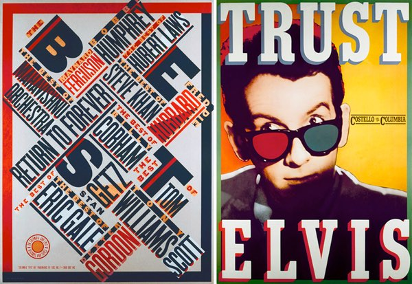

‘It seemed like i wasn’t good at anything, but then I discovered graphic design’
Background
Paula Scher was an american born artist, who grew up in Washington D.C. Paula met her husband Seymour Chwast in her senior year at Tyler School of Art, they married in 1973, in 1978 they were divorced, but then remarried again in 1989. They now live in an apartment not fair away from the Pentagram were they work. Being a graphic design, painter, educator in design and the first female principal at Pentagram, Paula is greatly respected within the world of art.
Paula had what some might call an unhappy childhood and found that drawing alone in her room was a way to escape from reality and do something that she loved. In her school years Scher took weekend art classes at “Corcoran College of Art and Design, which then lead to her becoming her schools publicity chairman, making all of the posters for her schools events. After this in 1966 she then went on to study at ‘Tyler School of Art’, graduating in 1970 although at first Scher didn't know what field of art she wanted to go into she always thoughts was going to be a painter but when it came down to it she thought to herself ‘I can’t really draw’, she was confused and found that everything she tried, she did not succeed at until she found graphic design.
“It took me a few seconds to draw it, but it took me 34 years to learn how to draw it in a few seconds.”Top
Inspirations
When Paula was in her second year at Tyler School of art she had a professor called “Stainslaw Zagorski who she says was a very important factor in her becoming the artist that she is today, she says that he brought out the best in her, pushed her to her limits and changed her life and gave her the career that she has today. Zagorski pushed Scher to goto New York where she was introduced to the art director for “Random house” Harris Lewine, who in turn introduced her to Seymour Chwast, her husband and she says that she owes that part of her life to Zagorski, and is forever grateful for him. Scher says that Zagorski made her see that “type was something with spirit and emotion” and once she came to the realisation of this she discovered how to work with type, she could then communicate through the use of type.
“Illustrate with type”
A quote that Zagorski once said to Scher and she said it was the best piece of advice she was ever given.
Scher also believes that her husband was a great mentor of hers, as he was older than her and already a well established artist he was able to teach her a lot about the industry, she said that Seymour and his partner Milton Glaser “ influenced my whole way of thinking about life and design”. Another inspiration of Paula’s was Henrietta Condak, who was a mentor of hers in the early 1980’s. Condal and Scher were experimenting with design and different forms at that time people viewing their work started calling it “Retro Postmodernism” as the two designers were looking at Constructivists, Dadaism, and De Stiji. it was around this time that Scher was designing pieces of work that were very like her “Best of Jazz” poster that she designed in 1979.
“I went to college thinking I was going to be a painter, but I couldn’t really draw, so I tried other things…It seemed like I wasn’t good at anything, but then…I discovered graphic design.”Top
Career
After this she moved to New York city where her career set off and made her the great designer that she is today. Although her first job was not working for CBS Records it was designing book covers for children books though shortly after she started this job she got a job at CBS records within the promotion department. The year 1970 was the year the Scher started designing for CBS records, she went onto become the art director there. At CBS she was in-charge of the designing and producing of about 150 albums per year, which is a large responsibility for a young woman of just 26. it was at this time that her flair for typography really came to light. Scher has been known to work with some of the worlds biggest record labels, producing over 150 album covers per year. For a short period of time Scher left CBS Records and worked at Atlantic records working on covers and promotions for the company, but after just one year she returned to CBS Records as the East Coast art director at the young age of just 25. For the next 10 years Paula continued to work in the music industry for CBS Records. Her approach to design was mainly about engaging the buyer in the cover itself, helping them to relate to the cover. 
In 1982 Paula finally left CBS Records to start up her own company with another designer, Terry Koppel who designer for magazines, he was also a graduate of Tyler School of Art. Koppel and Scher had been friends for years before they had started working together so it seemed like the perfect match. they worked together for seven years, they worked on editorial design, promotion packaging and covers. Paula and Terry worked on many projects together throughout theirs including designing the packaging for Oola Candy Store in 1986. After Scher and Koppel split, Scher was offered a position at Pentagram and she just couldn't turn down such an amazing opportunity. This was in 1991, Scher has been at Pentagram now for 23 years and is still there to this day.
Another side to Scher that is well known is her love for painting and maps. Her love for maps began in the 1990’s, she incorporates typography into these maps to show how she views the world in her head. The canvas’s that Scher used to display these maps were very large some spanning over 10 feet in length and height, the maps are filling full of detail and colour with as much information about the particular place that the map is being drawn of as possible. The maps were sometimes political, filled with culture and controversy, Scher has often said that it is the news and resent events that have happened throughout the world that inspire her maps. Paula found drawing the maps as a way for her to concentrate, to set her mind free from the outside work and focus on what she really loved which is art. Steer found maps interesting as she thought that most of them were drawn incorrectly, they were distorted she would even say.
"The process of painting these maps is time consuming and sometimes mindless,"Top
Accomplishments
Paula Scher is without a shadow of a doubt one of the best designers of her generation, she spans across such a wide range of design and has given so much time to the world of art. Steer has been honoured with many awards through out her years as a designer including, “The Chrysler Award for Innovation in Design” in 2000, the “AIGA Medal” in 2001, the “Type Directors Club Medal” in 2006 and she was also added into the “ Art Directors Hall of Fame” in 1998, also of these awards prove that she is so greatly appreciated within her field of work and also that she is a one of a kind artist that will never be replaced. The reason i chose to write about Paula Scher is because she teaches that you don’t have to be good at everything, you can make things into your own and input your strengths into the task at hand. She doesn’t think that drawing is everything about art, she believes that if you are creative enough within yourself and are able to see ideas. Scher believes that you should have your own identity and be able to understand it and not dwell on what others think. Her work is still being exhibited all of world including, New York, Washington, London, France and many many more museums. Paula Scher is a true inspiration and a credit to herself as an artist, she has always pushed herself, expanding her mind and her artistic skills to produce some truly beautiful pieces of work, and is still doing this today.
“The goal of design is to raise the expectation of what design can be”Top